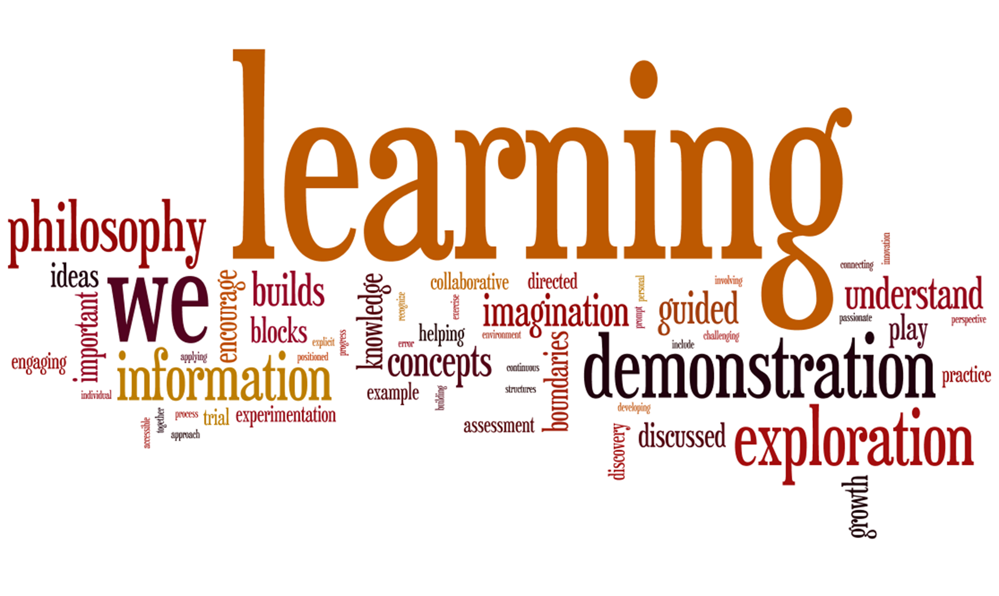

"Learn" and "Learned" redirect here. For other uses, see Learn (disambiguation) and Learned (disambiguation).
Children learning in a rural school in Bangladesh
Learning is the process of acquiring new
Human learning starts at birth (it might even start before[5] in terms of an embryo's need for both interaction with, and freedom within its environment
within the womb.[6]) and continues until death as a consequence of ongoing interactions between people and their environment. The nature and processes
involved in learning are studied in many established fields (including educational psychology, neuropsychology, experimental psychology, cognitive sciences,
and pedagogy), as well as emerging fields of knowledge (e.g. with a shared interest in the topic of learning from safety events such as incidents/accidents,[7] or in
collaborative learning health systems[8]). Research in such fields has led to the identification of various sorts of learning. For example, learning may occur as a result of habituation, or classical conditioning, operant
conditioning or as a result of more complex activities such as play, seen only in relatively intelligent animals.
Learning may occur consciously or without conscious awareness. Learning that an aversive event can't be avoided or escaped may result in a condition called learned helplessness.[11] There is evidence for human behavioral learning prenatally, in which habituation has been observed as early as 32 weeks into gestation, indicating that the central nervous system is sufficiently developed and primed for learning and memory to occur very early on in development.[12]
